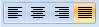
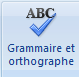
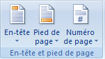
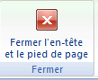
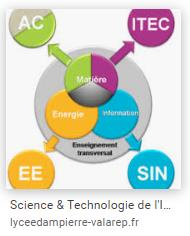
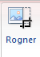
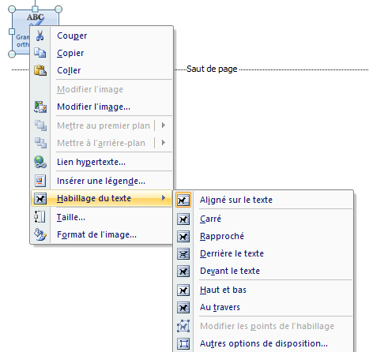
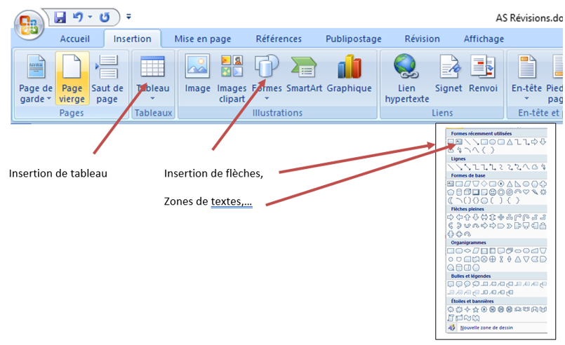
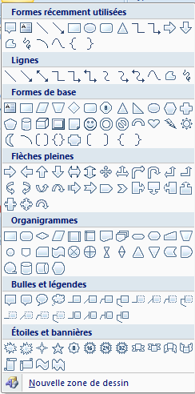
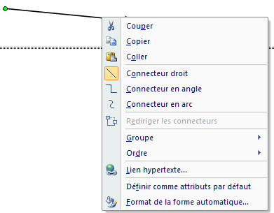

IT - I2D · Fiche outils
IT - I2D · Fiche outilsUtilisation de Word
Les bons réflexes de mise en forme pour un compte-rendu propre et lisible : texte justifié et corrigé, en-têtes, images et formes.
IT - I2D · Fiche outilsLes bons réflexes de mise en forme pour un compte-rendu propre et lisible : texte justifié et corrigé, en-têtes, images et formes.
Je tape du texte. Je tape du texte. Je tape du texte. Je tape du texte. Je tape du texte. Je tape du texte. Je tape du texte. Je tape du texte. Je tape du texte. Je tape du texte. Je tape du texte. Je tape du texte. Je tape du texte. Je tape du texte. Je tape du texte. Je tape du texte. Je tape du texte. Je tape du texte. Je tape du texte. Je tape du texte. Je tape du texte. Je tape du texte. Je tape du texte. Je tape du texte. Je tape du texte. Je tape du texte. Je tape du texte. Je tape du texte. Je tape du texte. Je tape du texte.

Il est justifié : même largeur de ligne partout.

Il est corrigé : correction orthographique et grammaire (onglet Révision). Il ne doit pas y avoir de petites vagues rouges sous le texte (faute orthographe) ou des vagues vertes (grammaire).

Mettre un en-tête et un pied de page « Insertion ».
Sélectionner une des 3 icônes puis définissez l’en-tête et le pied de page qui vous convient. Il faut quitter le mode pour revenir au corps du fichier :

Utiliser l’outil Rogner dans Outils d’images pour ne garder que la partie intéressante !


Les images peuvent être insérées au milieu du texte :

En cliquant droit sur l’image, vous sélectionnez « Habillage du texte » et vous choisissez la position de l’image qui vous convient.
« Rapproché » permet de coller l’image au plus près du texte.
Des dessins/formes peuvent être rajoutés. Cela vous donne ensuite accès à l’onglet « Outils de dessin ».

Insertion de tableau — Insertion de flèches, zones de textes…

Pour modifier une forme, cliquez droit sur la forme et sélectionner Format de la forme automatique. Vous pourrez retoucher le style de trait, la couleur, la couleur de remplissage de la forme…

Ce site a été réalisé par Abdellah CHELOUAH.